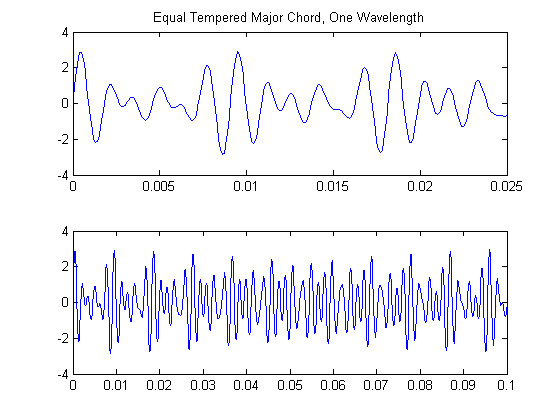
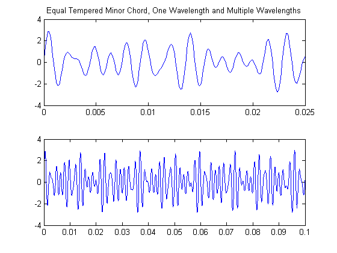
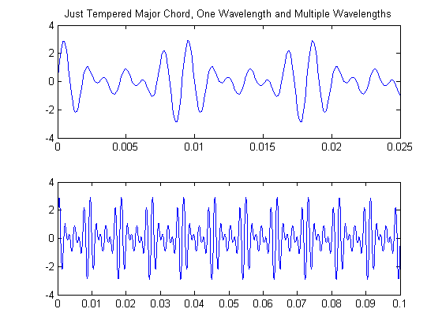
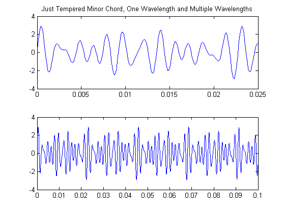

Contents
clear all; close all; dbstop if error;
constants.fs = 44100;
constants.chordtime = 3;
constants.scaletime = 0.5;
Part 2
[JustMajorScale] = musicscale('Major','Just','C4',constants);
[JustMinorScale] = musicscale('Minor','Just','C4',constants);
disp('Playing just tempered major scale')
soundsc(JustMajorScale,constants.fs);
pause(constants.scaletime*10);
disp('Playing just tempered minor scale')
soundsc(JustMinorScale,constants.fs);
pause(constants.scaletime*10);
[EqualMajorScale] = musicscale('Major','Equal','C4',constants);
[EqualMinorScale] = musicscale('Minor','Equal','C4',constants);
disp('Playing equal tempered major scale')
soundsc(EqualMajorScale,constants.fs);
pause(constants.scaletime*10);
disp('Playing equal tempered minor scale')
soundsc(EqualMinorScale,constants.fs);
pause(constants.scaletime*10);
Playing just tempered major scale
Playing just tempered minor scale
Playing equal tempered major scale
Playing equal tempered minor scale
Part 3
[JustMajorChord] = chord('Major','Just','C4',constants);
[JustMinorChord] = chord('Minor','Just','C4',constants);
disp('Playing just tempered major chord')
soundsc(JustMajorChord,constants.fs);
pause(constants.chordtime+0.5);
disp('Playing just tempered minor chord')
soundsc(JustMinorChord,constants.fs);
pause(constants.chordtime+0.5);
[EqualMajorChord] = chord('Major','Equal','C4',constants);
[EqualMinorChord] = chord('Minor','Equal','C4',constants);
disp('Playing equal tempered major chord')
soundsc(EqualMajorChord,constants.fs);
pause(constants.chordtime+0.5);
disp('Playing equal tempered minor chord')
soundsc(EqualMinorChord,constants.fs);
pause(constants.chordtime+0.5);
Playing just tempered major chord
Playing just tempered minor chord
Playing equal tempered major chord
Playing equal tempered minor chord
Part 4 - Graphs
a = nthroot(2,12);
eqtemp = [a a^2 a^3 a^4 a^5 a^6 a^7 a^8 a^9 a^10 a^11 a^12];
justemp = [16/15 10/9 9/8 6/5 5/4 4/3 45/32 64/45 3/2 8/5 5/3 7/4 9/5 15/8 2];
t = 0:0.0001:.025;
x = sin(2*pi*440*t)+sin(2*pi*440*eqtemp(4)*t)+sin(2*pi*440*eqtemp(7)*t);
subplot(2,1,1)
plot(t,x)
title('Equal Tempered Major Chord, One Wavelength')
subplot(2,1,2)
t2 = 0:0.0001:.1;
x2 = sin(2*pi*440*t2)+sin(2*pi*440*eqtemp(4)*t2)+sin(2*pi*440*eqtemp(7)*t2);
plot(t2,x2)
figure
t = 0:0.0001:.025;
x = sin(2*pi*440*t)+sin(2*pi*440*eqtemp(3)*t)+sin(2*pi*440*eqtemp(7)*t);
subplot(2,1,1)
plot(t,x)
title('Equal Tempered Minor Chord, One Wavelength and Multiple Wavelengths')
subplot(2,1,2)
t2 = 0:0.0001:.1;
x2 = sin(2*pi*440*t2)+sin(2*pi*440*eqtemp(3)*t2)+sin(2*pi*440*eqtemp(7)*t2);
plot(t2,x2)
figure
t = 0:0.0001:.025;
x = sin(2*pi*440*t)+sin(2*pi*440*justemp(5)*t)+sin(2*pi*440*justemp(9)*t);
subplot(2,1,1)
plot(t,x)
title('Just Tempered Major Chord, One Wavelength and Multiple Wavelengths')
subplot(2,1,2)
t2 = 0:0.0001:.1;
x2 = sin(2*pi*440*t2)+sin(2*pi*440*justemp(5)*t2)+sin(2*pi*440*justemp(9)*t2);
plot(t2,x2)
figure
t = 0:0.0001:.025;
x = sin(2*pi*440*t)+sin(2*pi*440*justemp(4)*t)+sin(2*pi*440*justemp(9)*t);
subplot(2,1,1)
plot(t,x)
title('Just Tempered Minor Chord, One Wavelength and Multiple Wavelengths')
subplot(2,1,2)
t2 = 0:0.0001:.1;
x2 = sin(2*pi*440*t2)+sin(2*pi*440*justemp(4)*t2)+sin(2*pi*440*justemp(9)*t2);
plot(t2,x2)
   
Part 5
Extra Credit